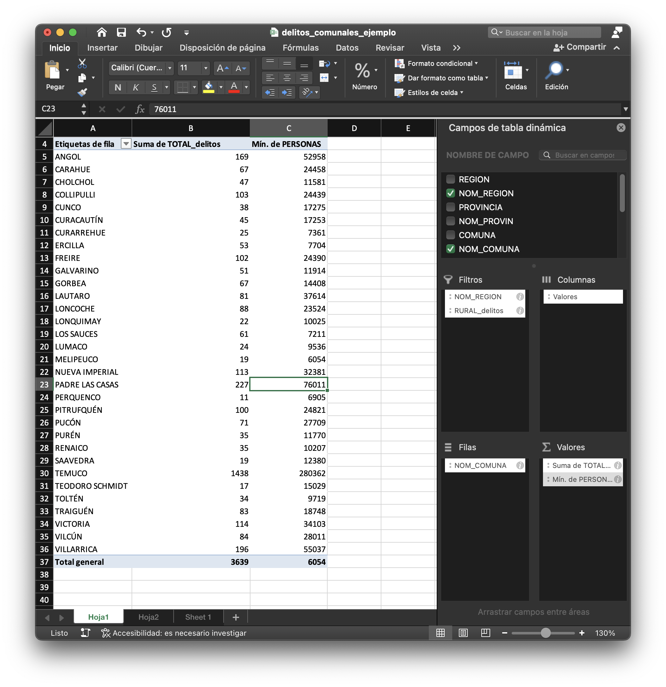
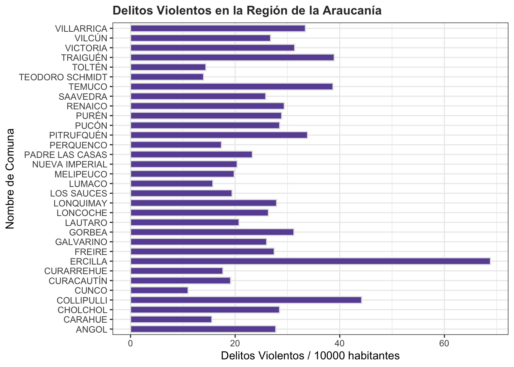

library(dplyr) # manipular tablas de datos
library(sf) #manipular objetos espaciales
library(openxlsx) # trabajar con archivos Excel
library(ggplot2) # graficos estáticos
# library(plotly) # gráficos dinámicos6 Dataframes y Delitos en R
Flujo de Trabajo de Indicadores de Delincuencia
Objetivo de la sesión
Aplicar un flujo completo de manipulación de datos con dplyr para construir un indicador territorial de delitos violentos por comuna, incluyendo filtros, categorización, resúmenes estadísticos y visualizaciones gráficas.
6.1 Introducción
En esta sesión se realizará un flujo de trabajo de construcción de un indicador territorial de delitos a nivel comuna utilizando R. Que contempla desde la lectura de la base de información (excel de delitos), agregar información de categorías, hacer filtros, resúmenes estadísticos (tablas dinámicas) y finalmente visualizaciones gráficas.
Acceso a Datos de Casos Policiales Sala CEAD
La base fuen obtenida de la Sala CEAD (Centro de Estudios de Análisis del Delito) dependiente del la Subsecretaría de Prevención del Delito. Corresponde a datos a nivel comunal que da cuenta de los casos policiales conocidos por las policías para distintos grupos delictuales a partir de las detenciones flagrantes y las denuncias formales realizadas por la ciudadanía en Carabineros de Chile o la Policía de Investigaciones de Chile.
Los grupos delictuales propuestos para el análisis incorporan el concepto de daño social y penal el cual busca ponderar los delitos no solo por su frecuencia, sino también, por el impacto y gravedad de sus consecuencias.
Consideración: A esta base de casos policiales se le agregó información administrativa de cada comuna.
Acceso a estadísticas policiales: link
CEAD: Centro de Estudios de Análisis del Delito
6.2 Librerías
6.3 Lectura de una tabla
Se leerá el archivo excel que se vio la semana pasada de delitos comunales.
delitos_tbl <- read.xlsx("data/excel/delitos_comunales.xlsx")
# str(delitos_tbl)ver los primeros 6 registros
head(delitos_tbl) REGION NOM_REGION PROVINCIA NOM_PROVIN COMUNA
1 05 REGIÓN DE VALPARAÍSO 056 SAN ANTONIO 05602
2 13 REGIÓN METROPOLITANA DE SANTIAGO 135 MELIPILLA 13502
3 08 REGIÓN DEL BIOBÍO 083 BIOBÍO 08314
4 01 REGIÓN DE TARAPACÁ 011 IQUIQUE 01107
5 03 REGIÓN DE ATACAMA 033 HUASCO 03302
6 10 REGIÓN DE LOS LAGOS 102 CHILOÉ 10202
NOM_COMUNA PERSONAS Tipo.Participante Subgrupo HOMBRE_delitos
1 ALGARROBO 13794 VICTIMA Abigeato 0
2 ALHUÉ 6365 VICTIMA Abigeato 1
3 ALTO BIOBÍO 5823 VICTIMA Abigeato 2
4 ALTO HOSPICIO 106297 VICTIMA Abigeato 0
5 ALTO DEL CARMEN 5280 VICTIMA Abigeato 0
6 ANCUD 38845 VICTIMA Abigeato 9
MUJER_delitos TOTAL_delitos
1 0 0
2 0 1
3 3 5
4 0 0
5 0 0
6 1 106.4 Agregar Categoría
Categorizar los Delitos:
Primeros veremos los tipos de delitos que existen, contenidos en la columna Subgrupo:
unique(delitos_tbl$Subgrupo)[1] "Abigeato" "Abusos sexuales"
[3] "Amenazas con armas" "Amenazas o riña"
[5] "Animales sueltos en la vía pública" "Auxilio al suicidio" - Se muestran los primeros 6 solo para buena visualización en el libro digital, en la práctica deben existir 50 categorías de delitos.
Crear una categoría de delitos
Se debe crear un grupo de delitos de su interés (Puede elegir los que usted quiera). Para este ejemplo se seleccionarán los delitos de violentos.
#guardo los delitos violentos en un vector
d_agrupados <- c( "Lesiones graves o gravísimas", "Lesiones menos graves",
"Microtráfico de sustancias", "Otros homicidios",
"Robo con homicidio", "Robo violento de vehículo motorizado",
"Robos con violencia o intimidación", "Tráfico de sustancias")
# leves o incivilidades
# d_agrupados <- c( "Amenazas con armas", "Amenazas o riña",
# "Desórdenes públicos", "Comercio ilegal" ,
# "Consumo de alcohol y drogas en la vía pública",
# "Daños", "Lesiones leves" , "Desórdenes públicos",
# "Desórdenes públicos", "Ofensas al pudor",
# "Porte de arma cortante o punzante","Receptación",
# "Robo de objetos de o desde vehículo",
# "Robo por sorpresa" )Agregar Categoría de delitos
Para esto crearemos una nueva columna con la función mutate()
delitos_tbl <- delitos_tbl %>%
mutate(grupo = case_when(
Subgrupo %in% d_agrupados ~ "Violento",
TRUE ~ "Otro"
))
# head(delitos_tbl)
count(delitos_tbl, grupo) grupo n
1 Otro 28980
2 Violento 5520dim(delitos_tbl)[1] 34500 136.5 Filtros
Filtrar por Tipo de Participante
delitos_filtered <- delitos_tbl %>%
filter(Tipo.Participante == "VICTIMA")Filtrar por Región
delitos_filtered <- delitos_filtered %>%
filter(NOM_REGION == "REGIÓN DE LA ARAUCANÍA")Filtrar por Categoría
delitos_filtered <- delitos_filtered %>%
filter(grupo == "Violento")6.6 Generar Resúmenes (similar a tablas dinámicas)

tabla_resumen <- delitos_filtered %>%
group_by(NOM_COMUNA) %>%
summarise(total_delitos = sum(TOTAL_delitos),
pob = min(PERSONAS))
tabla_resumen# A tibble: 32 × 3
NOM_COMUNA total_delitos pob
<chr> <dbl> <dbl>
1 ANGOL 147 52958
2 CARAHUE 38 24458
3 CHOLCHOL 33 11581
4 COLLIPULLI 108 24439
5 CUNCO 19 17275
6 CURACAUTÍN 33 17253
7 CURARREHUE 13 7361
8 ERCILLA 53 7704
9 FREIRE 67 24390
10 GALVARINO 31 11914
# ℹ 22 more rowsPonderar por población
tabla_resumen <- tabla_resumen %>%
mutate(
del_10000_hab = round((total_delitos / pob) * 10000, 2)
)
tabla_resumen %>%
arrange(desc(del_10000_hab)) %>%
head(10)# A tibble: 10 × 4
NOM_COMUNA total_delitos pob del_10000_hab
<chr> <dbl> <dbl> <dbl>
1 ERCILLA 53 7704 68.8
2 COLLIPULLI 108 24439 44.2
3 TRAIGUÉN 73 18748 38.9
4 TEMUCO 1085 280362 38.7
5 PITRUFQUÉN 84 24821 33.8
6 VILLARRICA 184 55037 33.4
7 VICTORIA 107 34103 31.4
8 GORBEA 45 14408 31.2
9 RENAICO 30 10207 29.4
10 PURÉN 34 11770 28.96.7 Visualización gráfica
library(ggplot2)g_barra <- ggplot(tabla_resumen, aes(x = NOM_COMUNA, y = del_10000_hab)) +
geom_bar(fill = "#6a51a3", color = "gray90", stat = "identity", width = 0.7)+
coord_flip()+
theme_bw()+
labs(title="Delitos Violentos en la Región de la Araucanía",
y ="Delitos Violentos / 10000 hebitantes", x = "Nombre de Comuna")+
theme(plot.title = element_text(face = "bold",colour= "gray20", size=12))
g_barra
Guardar el gráfico de barras como imagen
ggsave(plot = g_barra, filename = "images/del_violentos_R09.png", width = 8, height = 7)6.8 Visualización dinámica
Generar gráfico dinámico con plotly
# Lectura de la Librería
library(plotly)
# Convertir un gráfico estático en dinámico
ggplotly(g_barra)6.9 Actividad
Actividad: Análisis comparado
- Cambia la región analizada a
REGIÓN METROPOLITANA DE SANTIAGO. - Cambia los delitos seleccionados por delitos contra la propiedad.
- Calcula la tasa por 10.000 habitantes y genera un gráfico de barras.
- ¿Qué comunas destacan por mayor concentración de estos delitos?